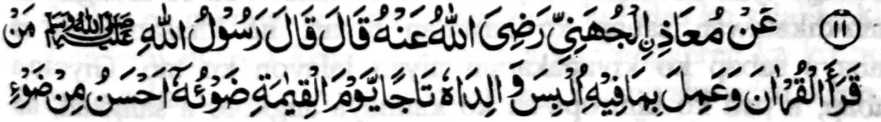
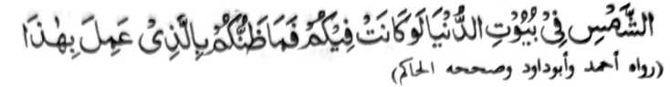
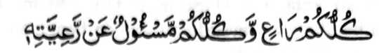

Hadith -11


Miyaknthitayan ko Mo’az Johanie (Rndhiallaho ‘Anto) a pitharo iyan a pitharo o Rasulollah (Sallallato ‘Alaihi Wasallam), “Sa tao a matiya sa Qur’an yo inggolalan niyan so madadalemon [a sogo-an] na sangkadan so mbala a lakes iyan sa sanykad ko Gawi-i a Qiyamat a matihaya a di so alonyan opama baden matago ko walay [o isa rekano] sa donya. Na antona-a i pandapat iyo ko [tao a] sekaniyani minggolalan sangkanan [a manga sogo-an]?”
Sabap ro-o, na pho-on ko kalbihan ago kabarakat o kapembatiya-a niyan ko Qur’an ago so kininggolalanen niyan non, na so mbala a lokes iyan na zangkadan sa bantogan, a aya katihaya niyan na matihaya a di so alongan apiya giyangkanan a alongan na [pakaranin] sa tago-on ko walay o tao. So alongan na tanto reketano a mawatan ogaid na so sindao niyan na tanto a mabager. Opama ka so alongan na tomepad ko walay o tao, na so katihaya niyan na mapethake-takep. So katihaya o sangkad a khisangkad ko mbala a lokes o pababatiya na lawan non pen sa katihaya. O giya-i ididiyandi ko mbala a lokes, na antona-i balas a khakowa o pababatiya? Mata-an a opama ka so waris na mala-a khakowa niyan, na so balas o sekaniyan a kiyasabapan non na lebi a mala. So mbala a lokes na miyakakowa siran sa balas sabap bo sa siran-i kiyasabapan sa kiyatago sa donya angkoto a wata ago siran-i miyakapaganadon sa ‘Ilmo.
So Hakim (Rahmatullahi ‘Alaihi) na miyapanothol iyan a pho-on ko Buraida (Radhiallaho ‘ Anho) a katharo o Rasulollah (Sallallaho ‘Alaihi Wasallam), “Sa tao a batiya-an niyan so Qur’an taros a inggolalan niyan na pakapezangkaden sa sangkad a ayaden a piyakandama-i na sindao go so mbala a lokes iyan na pakapenditaren sa nditaren a mala-i arga a di so donya.” Tharo-on niran, “Ya Allah! Ino kami makapenditar sa lagida-i?” Isembag kiran, “Sabap ko kiyabatiya-a o wata iyo ko Qur’an.”
Miya-aloy ko [kitab a] Jama-ul-Fawa-id o Tibrani (Rahmatullahi ‘Alaihi) a so Hadhrat Anas (Radiallaho ‘Anho) na piyanothol iyan a katharo o Rasulollah (Sallallaho ‘Alaihi Wasallam), “Saden sa ipangenda-o niyan so kabatiya a ko Qur’an ko wata iyan a mama (apiya da niyan milangag), na so langon o dosa niyan, melagid o miya-ona o di na da pen mitalingoma, na palayaden perila-an, na sa peman sa paki langag iyan so Qur’an ko wata iyan na pagoyagen sekaniyan ko Gawi-i a Kaphangokom sa lagid o katihaya o ika pat a talin ko ayag; na so wata iyan na tharo-on non a pho-on den matiya [sa Qur’an], na omani isa a Ayaat a mabatiya o wata iyan na ipangkat mambo so pangkatan niyan (a ama iyan) sa sapangkat ko Sorga, taman sa matamat so Qur’an.”
Giyanan man-i manga kalbihan ko kipangenda-on ko Qur’an ko manga wata iyo. Kena ba giya-i bo. Aden pen a salakao ron. [Phangenin aken a] di pakinggola ola o Allah, opama papasa ngka ko wata aka so Timo ko Agama sabap bo ko maito a nganin, na kena ba bo aya miyapapas ka on na so tanitiyasa a balas ka zomariya angka pen sa hadapan o Allah. Ba di kena a pephapasen ka so pekhababaya-an ka a wata a ka ko kabatiya-a ko Qur’an sabap ko kawan ka sa so langon a manga Ulama ago so manga Huffaz ko oriyan o kilangagen niran ko Qur’an na mimbaloy siran a mangandaki balas ko salakao kiran? Tatademi ngka a kena ba giyabo a kinisanggaren ka ko manga wata a ka ko tanitiyasa a kamboko ka miyaka-aden kapen ko manga waga ngka sa mapened a somariya. So Hadith a:

Omani isa rekano na pephagipat go omani isa rekano na pagiza-an ko pephagipaten niyan.
Na aya ma-ana niyan na omani isa na pagiza-an ko langon o kamimilikan niyan ago manga ta-alok rekaniyan o anda taman-i kiyazinanadan niyan kiran ko Agama. Mata-an a so tao na siyapa niyan a ginawa niyan ago so manga ta-alok rekaniyan sangka-iya a manga karibatan. So [thigon o pananaro-on] “Ino ba pagenda-i o tao so nditareh niyan sabap sa kalek ko manga tom?” Di, ka so tao na paliyogaton so kasosotiya niyan ko manga nditaren niyan. O zinanada ngka so manga wata a ka ko Agama na miyapokas ka ginawa ngka sangka-iya a atas-tanggongan. Si-i ko tenday o kawiyago-yag angkoto a wata, na apiya antona-a mapiya ‘amal-i manggalebek iyan, go so sambayang a ipenggolalan niyan ago so kapangeni sa rila si-i ko Allah a gi-i niyan nggola-ola-an pantag reka, na pephakaporo oto ko daradat ka si-i ko Sorga. Pantag bo sangka-iya kapaginetao ago so maito a arga, na biyaloy ngka so wata aka a da-a meleng iyan ko Agama, na kena ba giyabo a kipemboko-on ka sangka-iya a karibatan ka so langon o khasogok iyan a marata ago manga dosa niyan na di ka on makalilidas. Sabap bo ko soa-soat ko Allah, na kapedi-in niyo so manga ginawa niyo. Giyangka-iya a kawiyag-oyag na baden sagad go so kapatay na thago-an niyan sa tamana so langon o maregen, apiya-i kala iyan, ogaid na so kamboko a da-a tamana iyan, na tani-tiyasa.